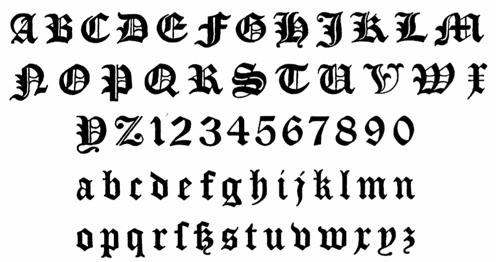
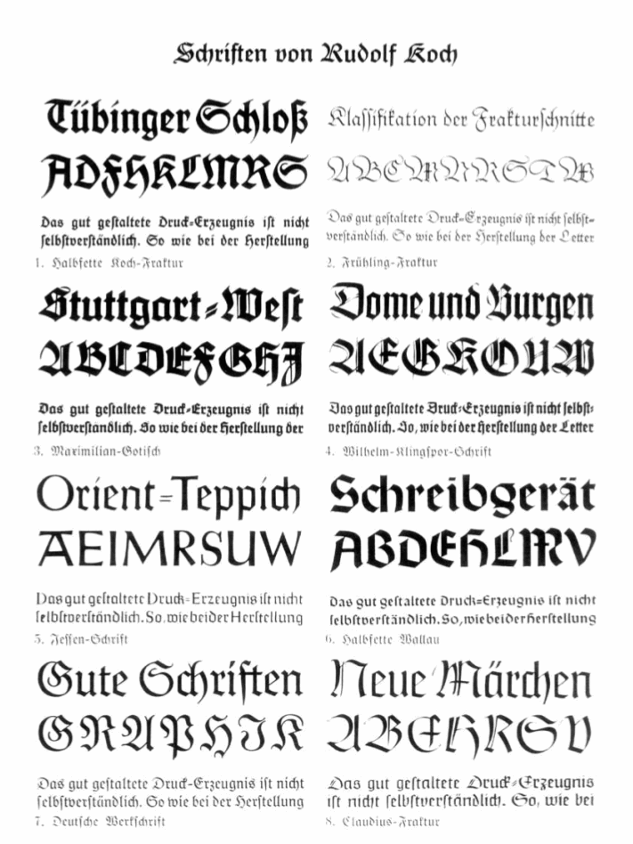
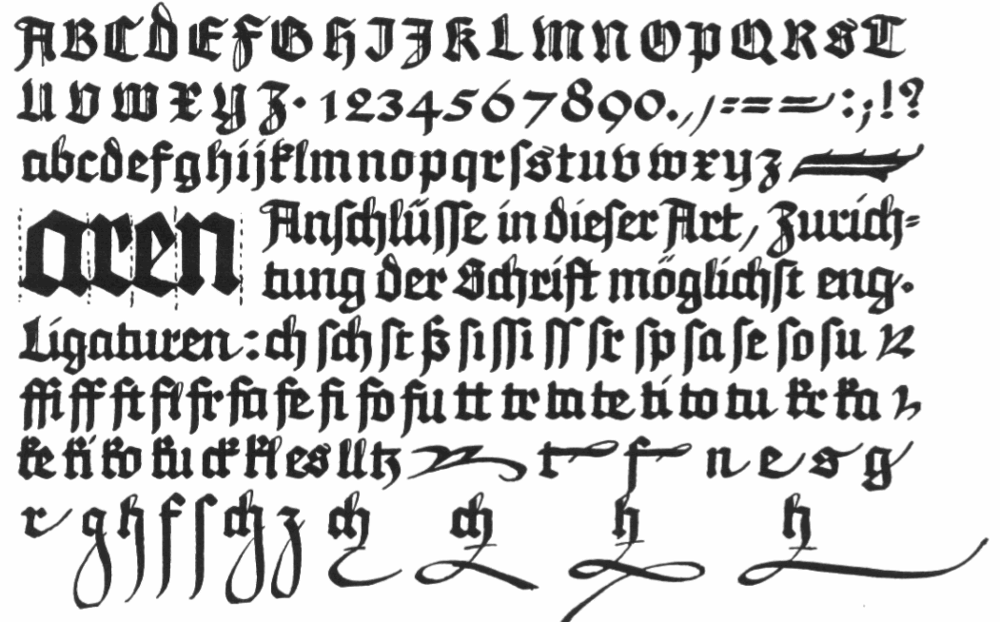
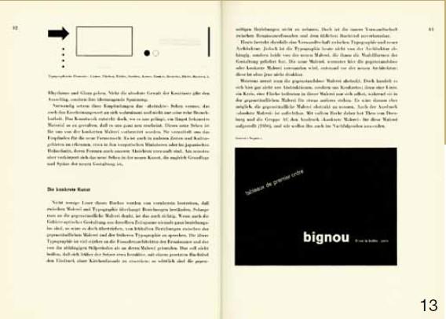
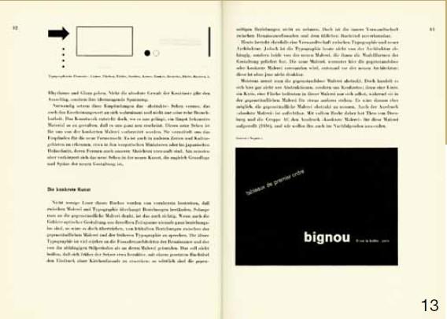
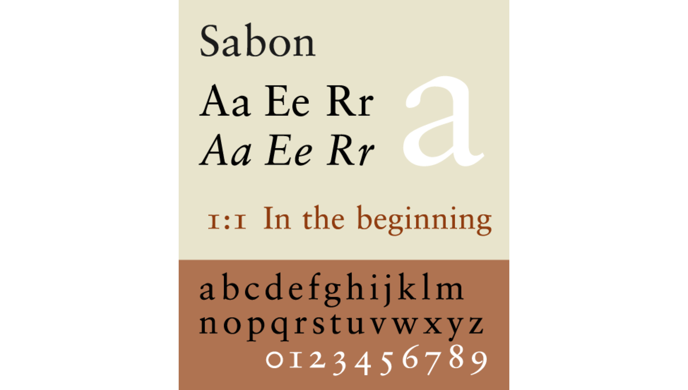

Jan Tschichold

“Discuss Jan Tschichold’s contribution to typographic and graphic design in his lifetime”
Introduction
Jan Tschichold dedicated his life to graphic design, calligraphy, book making and type. Up until his death in 1974, Jan was dedicated to teaching and working as a practicing artist, publishing multiple books on the standards of graphic design and type. He is viewed as one of the most influential graphic designers and typographers of the 20th Century, most notably through his reimagination of penguin book covers following World War 2. Likewise, Tschichold helped to promote and develop the principles of typographic modernism, idealizing ‘grotesk’ and conservative type structures from 1923-1931. Over time, these principles were slowly abandoned in favour of Classicism in print design in 1932, as he rejected his formerly rigid beliefs. He created the popular typeface Sabon during this period, taking inspiration from the sans serif typefaces of Claude Garamond. In this essay, I am going to review the extent of Tschichold’s influence throughout his lifetime in graphic design and typography. I am going to approach this by exploring publications of his concerning these topics and by looking at the work that he produced during this period, as well as how this affected others in the world of graphic and typographic design.
Tschichold before Bauhaus
Tschichold came from a family of signwriters, and from a young age followed in his father’s footsteps by picking up the trade. At 14, Tschichold began teaching drawing and illustration, and continued to do so for three years, where at age 17, he embarked on a course in typographic studies in the Leipzig Academy of the arts. He was trained in a number of different mediums under Hermann Delitzsch; including wood cutting, engraving and book binding. Tschichold excelled and, in 1921, was given the honour of leading classes in script writing. His training in Calligraphy and typography set him apart from most other typographers of that era, who mostly trained in architecture or the fine arts. Typography at this time was uneven in style, mostly hand drawn, with weighted fonts hardly ever used. Furthermore, fonts were usually chosen sporadically, with no consideration given for the nature or message of the text. Up until 1923, Tschichold created multiple hand drawn serif designs, following the typographic standards of the time. He took quite a lot of inspiration from Rudolf Koch’s first fonts ‘maximilian grotesk’, as well as from works by Pierre Simon Fournier. Tschichold can be seen to stand out from the early stages of his career,excelling at a very young age in both the teaching and practice of typography and calligraphy. He can also be seen to heavily influence others with his own unique style during this time, as he taught classes both before and during his education at Leipzig school of art.
  Tschichold after Bauhaus: The Modernist Phase
Tschichold’s typographic style began to evolve in 1924 when he attended a Bauhaus exhibition. During this time, he began to heavily draw inspiration from ‘radical’ constructivists such as El Lissitzky, Kurt Schwitters and László Moholy-Nagy,and began to adopt the design principles of modernism. These people aimed to radically change the rigid typographic standards of that time, by focusing on using non centered sans serif fonts on book covers and posters, with simple shapes and straight edges. `In 1925, Tschichold began to draw inspiration from elementary and functional design, as well as Bauhaus font, created by Herbert Bayer of the Dessau Bauhaus. Tschichold became one of the most significant representatives of modernist/ “new” typography, compiling these new approaches into a thesis called “Elemental Typography” in a special issue of ‘Typographic Communications’.


Although Tschichold's views wouldn’t fully be acknowledged until a number of years later, he was well known in the circles of typography and design and divided many with his opinions. For the next decade, Tschichold continued to teach and apply his modernist beliefs in his everyday life and, at Paul Renner’s request, began teaching at the Frankfurt school of applied arts in Typography and calligraphy. During this period, Tschichold decided to publicise his beliefs by producing an instructional book on the basics of modernist typography, entitled “The New Typography” (Die neue Typographie) in 1928. This publication condemned all typefaces apart from sans-serif (Grotesk), favouring non-centered design and standardised paper sizes, as well as the effect of using different weights and styles of type in publications. He believed, in his own words that;
“the essence of the new typography is clarity. This puts it into deliberate opposition to the old typography whose aim was ‘beauty’… The aim of every typographic work {should be} the delivery of a message in the shortest, most efficient manner… White space is to be regarded as an active element, not a passive background period… Asymmetry is the rhythmic expression of functional design. In addition to being more logical, asymmetry has the advantage that its complete appearance is far more optically effective than symmetry.” (Tschichold et al., 1987)
He additionally wrote numerous manuals on modernist typography principles, which along with his magnum opus ‘Die neue Typographie’, had a vast influence among countless workers in Germany at the time due to its ground breaking views on the “appropriate” use of type. In 1933, due to his divisive views and his high stance in the German design community, he began to seize the attention of the Nazi party, who deemed his opinions ‘un-German’, and he was denounced as a "cultural Bolshevist". He fled to Switzerland following arrest by the Gestapo, and had all known copies of his books burned, due to the fear of his growing national influence on traditional standards of typographic design. He quickly secured a job teaching in the Basel School of Applied Arts as well as a part- time job in the Benno Schwabe publishing house, due to his reputation and teaching experience, but struggled to find new and interesting projects to work on. During this time, he authored an additional several books, including his infamous and highly anticipated novel ‘Typographic Design’ in 1935. This book was in such high demand at this time that it rapidly sold 1,000 copies before it even went to print, further emphasising Tschichold’s influence on fellow designers and indeed the design community at the time.
 

Tschichold after Bauhaus: The Classicist phase
Tschichold began to loosen his once stringent modernist beliefs and use of Bauhaus style towards the beginning of 1932, despite passionately working as an advocate for more than 15 years. He returned to utilising Classicist typographic techniques and ideals, which can be seen in the creation of his typeface ‘Saskia’, as well as through his acceptance of Roman Typefaces for body-type. He even condemned his earlier work ‘Die neue Typographie’ for being too extreme, comparing them to Fascism and national socialism of the time. He reverted to center aligning most of his work, and focused solely on book typography at this time. During this time, he believed that;
“ In the light of my present knowledge, it was a juvenile opinion to consider the sans serif has the most suitable or even the most contemporary typeface.”(Strizver, 2018)
From 1947-1949, Tschichold worked with Penguin Books in England at the invitation of Allen Lane, and overseen the redesigning of over 500 copies of penguin paperback books. In addition to this, Tschichold compiled and published a set of typographic rules, known as ‘The Penguin Typographic Rules’ in 1947. Before this period, Penguin books design was relatively unsuccessful, and failed to make an impact. The 4 page set of strict design rules went on to change the way that books were designed for many years to come. By changing the tone of the infamous orange strips, using different weights of Gill San, redesigning the penguin logo, utilising the golden ratio and employing strict text tracking on the covers, Tschichold helped to create a more unified look and style to Penguin books as a whole. It is fair to say that Tschichold was highly fruitful during his time with penguin, and made massive strides in modern book design for the company post World War 2, as well as setting new standards for the production of books across England.


Tschichold’s most well known and popular book was published in 1962, entitled ‘Arbitrary Measurement Relations of the Book Page’ and instantly became a classic. It was widely translated and has since undergone 18 editions. During this period, Tschichold’s Typeface Sabon was released, clearly resonating Tschichold’s Classicist style in type. It has since become a highly popular typeface across the world.

Conclusion
Following his lifetime dedicated to publishing, practising and teaching in the world of graphic design and typography, Tschichold’s legacy and impact can be clearly seen in the design community. His Modernist principles in ‘Die Neue Typographie’ has been implemented into posters, websites and books, and is still seen as highly relevant to modern day graphic designers and even web designers, due to the sleek, simplistic design of modernist type that has since been idealised as the most appropriate application of type. He helped to change the standards of typography by breaking the rules of traditional handwritten German Type, and had a highly significant influence on the working class in Germany prior to the Nazi takeover. Tschichold also contributed heavily to the design community through teaching in the Leipzig school of art, Frankfurt school of applied arts, Basel school of applied arts and the Benno Schwabe publishing house. It is highly likely that his then modernist principles of typographic design made a heavy impression on his students over this time, and helped to change the standards of graphic design in that era. Tschichold’s published books have since been held to a high esteem, most particularly ‘Typographic design’ and ‘Arbitrary Measurement Relations of the Book Page’ and are even implemented into modern day typographic and graphic design. Most notable of all was Tschichold’s significant impact on the design of Penguin books. He helped not only to rejuvenate a stagnant and outdated book cover design, but also helped to reinvigorate Penguin books and set new standards for book design across england with his unified style of design. Overall, Tschichold helped to not shape the world of graphic and typographic design and change the standards of publications across England. It can therefore be seen that Tschichold’s contribution during his lifetime was incredibly great and expanded over multiple areas, and one could argue that without him, modern day graphic design would be incredibly different to the way that it is now.
Bibliography:
- Tschichold, J., Doede, W., Fleischmann, G. and Tschichold, J. (1987). Die Neue Typographie. Berlin: Brinkmann & Bose.
- Strizver, I. (2018). Jan Tschichold, Master Typographer of the 20th Century - CreativePro.com. [online] CreativePro.com. Available at: https://creativepro.com/jan-tschichold-master-typographer-of-the-20th-century/ [Accessed 16 Dec. 2018].
- Charchar, Alexander R. “Jan Tschichold – Typographic Genius.” Retinart RSS. N.p., 15 Mar. 2009. Web. 03 Mar. 2014. http://retinart.net/artist-profiles/jan-tschichold/>.
- Hollis, Richard. “Jan Tschichold: A Titan of Typography.” Theguardian.com. Guardian News and Media, 05 Dec. 2008. Web. 03 Mar. 2014. http://www.theguardian.com/artanddesign/2008/dec/05/jan-tschichold-typography>.
- “In Honor of the 100th Birthday of Jan Tschichold.” Linotype Font Feature. Linotype, 2002. Web. 03 Mar. 2014. http://www.linotype.com/794/inhonorofthe100thbirthdayofjantschichold.html>.
- V. Ryan. “BAUHAUS STYLE OF WRITING.” Technology Student. World Association of Technology Teachers, 2010. Web. 03 Mar. 2014. http://www.technologystudent.com/prddes1/bauhaus2.html>.
- Die neue Typographie. Ein Handbuch für zeitgemäß Schaffende, Verlag des Bildungsverbandes der Deutschen Buchdrucker, Berlin 1928.
- English translation: The New Typography. New edn. Berkeley: University of California Press, 2006.
- (in German) Eine Stunde Druckgestaltung: Grundbegriffe der Neuen Typografie in Bildbeispielen für Setzer, Werbefachleute, Drucksachenverbraucher und Bibliofilen, Stuttgart: Akademischer Verlag Dr. Fritz Wedekind & Co., 1930
- Eine Stunde Druckgestaltung. Stuttgart: Akademischer Verlag Dr. Fritz Wedekind & Co., 1930.
- Schriftschreiben für Setzer. Frankfurt a.M.: Klimsch & Co., 1931.
- Typografische Entwurfstechnik. Stuttgart: Akademischer Verlag Dr Fritz Wedekind & Co., 1932.
- Typografische Gestaltung. Basel: Benno Schwabe & Co., 1935.
- Gute Schriftform. Basel: Lehrmittelverlag des Erziehungsdepartements, 1941/42, 1943/44, 1945/46.
- Geschichte der Schrift in Bildern. Basel: Holbein-Verlag, 1941/1946 (reprint: Hamburg: Hauswedell, 1951/1961).
- English translation: An Illustrated History of Lettering and Writing. London: o.V., 1947.
- Chinesisches Gedichtpapier vom Meister der Zehnbambushalle. Basel: Holbein-Verlag, 1947.
- Was jemand vom Buchdruck wissen sollte. Basel: Birkhäuser-Verlag, 1949.
- Schatzkammer der Schreibkunst, 2nd edn. Basel: Birkhäuser Verlag, 1949.
- Im dienste des buches, SGM-Bücherei, St. Gallen 1951.
- Chinesischer Farbendruck aus dem Lehrbuch des Senfkorngartens, Holbein-Verlag, Basel 1941 u. 1951.
- Schriftkunde, Schreibübungen und Skizzieren für Setzer, Holbein-Verlag, Basel 1942. – Reprint: Schriftkunde, Schreibübungen und Skizzieren, expanded edn. Berlin: Verlag des Druckhauses Tempelhof, 1951.
- Der Holzschneider und Bilddrucker Hu Cheng-yen. Basel: Holbein-Verlag, 1943/1952. Chinesische Farbendrucke der Gegenwart. Basel: Holbein-Verlag, 1944/1953. English translation: Chinese Colour Printing of the present day. London–New York: o.V., 1953.
- Formenwandlungen der Et-Zeichen. Frankfurt, Stempel, 1953
- 1st English translation: The Ampersand: Its Origin and Development, London, Wodhuysen, 1957.
- 2nd English translation: A Brief History of the Ampersand, Paris, Zeug, 2017. ISBN 979-10-95902-06-5
- Erfreuliche Drucksachen durch gute Typografie. Ravensburg: Otto Maier-Verlag, 1960 [Reprint]. – Auch: Augsburg: Maro-Verlag, 1988, ISBN 3-87512-403-0.
- (in German) Meisterbuch der Schrift: Ein Lehrbuch mit vorbildlichen Schriften aus Vergangenheit und Gegenwart für Schriftenmaler, Graphiker, Bildhauer, Graveure, Lithographen, Verlagshersteller, Buchdrucker, Architekten und Kunstschulen (3. unv. Nachdruck der 2. ed.), Ravensburg: Otto Maier-Verlag, 1965, ISBN 3-473-61100-X
- Die Bildersammlung der Zehnbambushalle, Eugen-Rentsch-Verlag, Zürich/Stuttgart 1970.
- foto-auge [zusammen mit Franz Roh], Akademischer Verlag Dr. Fritz Wedekind & Co., Stuttgart 1929 [Reprint]. – Auch: Ernst Wasmuth, Tübingen 1973.
- Ausgewählte Aufsätze über Fragen der Gestalt des Buches und der Typographie, Birkhäuser-Verlag, Basel 1975 u. 1987, ISBN 3-7643-1946-1.
- De proporties van het boek (Die Proportionen des Buches), Amsterdam, Amst., Intergrafia, 1955, de buitenkant, 1991
- Schriften: 1925–1974 Band 1/2. Berlin, 1992.
- The Form of the Book: Essays on the Morality of Good Design. Roberts, WA: Hartley and Marks, 1995.
- Jan Tschichold, Posters of the Avantgarde, Martijn F. Le Coultre, Alston W. Purvis, VK-projects, Laren, The Netherlands, 2007, ISBN 978-90-5212-003-4
- Jan Tschichold. Master Typographer. Thames & Hudson. 2011
- Kim Hyun-mi (2000), “New typography revolutionist Jan Tschichold”, Design House.
- Christopher Burke, “The Active Book: Jan Chi-hold and the New Typography”, Acting, Workroom, 2013.
- Jong, Cees de (2010), “Jan Tschichold: The Typography of the Typography of His Life, Works and Heritage”, Translated by Song Sung-jae, Seoul
- Tschichold, Jan (2006), “Typography Design by Jan Tschichold”, Ahn Sang Soo, An Greifics Company.
- AG's ARTIN Design Blog (2011) Jan Tschichold Avant-Garde Typography Retrieved from https://ha065.wordpress.com/ gamswen/jan-tschichold-and-avant-garde-typography/
- Jay kim (2016) Sabon 폰트계의 목화씨 Retrieved from https://brunch.co.kr/@nitro2red/66
- 민구홍 (2013) 펭귄북스' 사랑한다면 이 '산맥'을 거쳐 가야죠 Retrieved from http://www.pressian.com/news/article. html?no=111692
- 윙 (2011) Penguin books Retrieved from http://m.blog.naver.com/manicstreet/120136295953
- Georgina Parfitt (2015) A Brief History of Penguin Design: Part Two Retrieved from http://blog.towerbabel.com/2015/07/ a-brief-history-of-penguin-design-part-two/
- Retinart.net. (2018). Jan Tschichold – Typographic Genius - Retinart. [online] Available at: http://retinart.net/artist-profiles/jan-tschichold/ [Accessed 19 Dec. 2018].
- History of Graphic Design. (2018). Jan Tschichold’s Influence. [online] Available at: https://nstanca7.wordpress.com/2014/03/03/jan-tschicholds-influence/ [Accessed 19 Dec. 2018].
- En.wikipedia.org. (2018). Jan Tschichold. [online] Available at: https://en.wikipedia.org/wiki/Jan_Tschichold#See_also [Accessed 19 Dec. 2018].
- Strizver, I. (2018). Jan Tschichold, Master Typographer of the 20th Century - CreativePro.com. [online] CreativePro.com. Available at: https://creativepro.com/jan-tschichold-master-typographer-of-the-20th-century/ [Accessed 19 Dec. 2018].
- Courses.psu.edu. (2018). Jan Tschichold: Penguin composition rules. [online] Available at: https://www.courses.psu.edu/art/art101_jxm22/tschichold.html [Accessed 19 Dec. 2018].
- the Guardian. (2018). Designer Jan Tschichold in pictures: Penguins, paperbacks and posters. [online] Available at: https://www.theguardian.com/culture/gallery/2008/dec/05/design [Accessed 19 Dec. 2018].
- Designhistory.org. (2018). Tschichold's New Typography. [online] Available at: http://www.designhistory.org/Avant_Garde_pages/DieNeueType.html [Accessed 19 Dec. 2018].